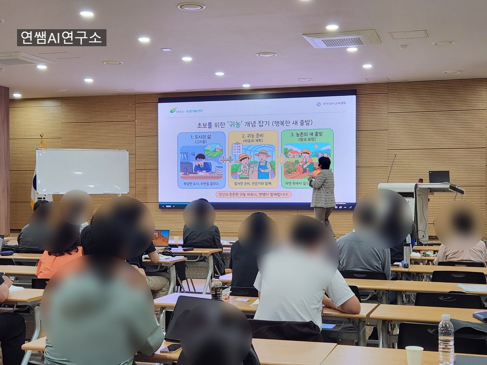
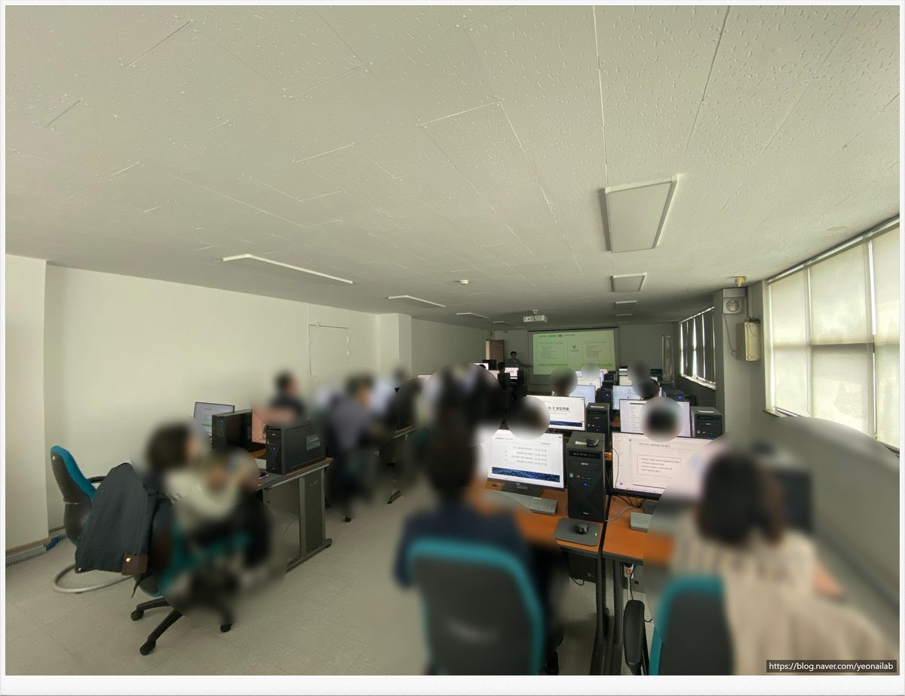
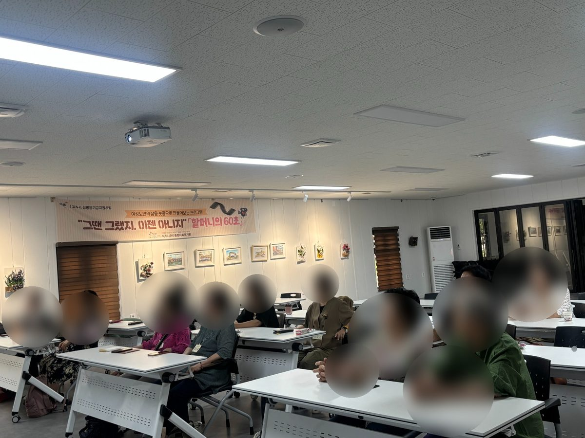
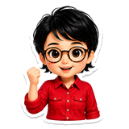

AI 활용
알기 쉬운
2025 AI 트렌드
누구나 쉽게 이해하는 AI 트렌드와 실전 활용법
AI 도구와 정책은 매주 바뀝니다. 현장에서 직접 확인한 것만 정리해 올립니다.
기관의 목적과 대상에 맞춰 커리큘럼을 새로 짜서 진행합니다.
업무와 일상에 바로 적용하는 실전 교육. 따라 하면 그 자리에서 결과물이 나옵니다.
어르신 눈높이에 맞춘 디지털·AI 활용 교육. 스마트폰 안전 사용까지 함께 다룹니다.
AI 보도자료 작성, 업무 자동화 등 기관 업무에 맞춘 커리큘럼을 설계합니다.
AI와 메타버스를 결합한 미래교육 콘텐츠를 직접 만들어 봅니다.
AI를 활용한 글쓰기와 독서. 기술이 아니라 표현을 배우는 수업입니다.
배운 것을 다른 사람에게 다시 알려줄 수 있게. 가르치는 사람을 기르는 과정입니다.
시청·교육청·복지관·기업 연수원까지, 대상이 달라도 눈높이를 맞춥니다. 마우스를 올리면 멈춥니다.



교육 기획, 강사 양성, 협동조합 운영까지 함께 하고 있습니다.
맞춤형 교육 서비스 기획과 운영. 여성기업 인증 사업체입니다.
강사 교육과 역량 개발 프로그램에 참여합니다.
공공기관·복지관 연계 교육을 전담합니다.
지역 평생교육 사업을 함께 만들어 갑니다.
누구나 쉽게 이해하는 AI 트렌드와 실전 활용법
디지털 시대 강사와 교육자를 위한 실전 가이드
AI 강사가 쓴 따뜻한 일상의 시 모음
국립특수교육원 상상체험버스 최우수강사상
부천여성인력개발 디딤돌 최우수동아리상
미래교육아카데미 우수강사상
투닝 교재 연구원 위촉
이 밖에 AI 관련 자격증 및 수료 10개 이상을 보유하고 있습니다.
AI가 어렵지 않도록, 누구에게나 쉽고 재미있게.연쌤 AI 연구소 · 연하의서재

아래 버튼을 누르면 메일 앱이 열리고, 문의 양식이 자동으로 채워집니다. 내용을 채워 보내주세요.
메일 앱이 열리지 않으면 digitalyeonssam@naver.com 으로 보내주세요.